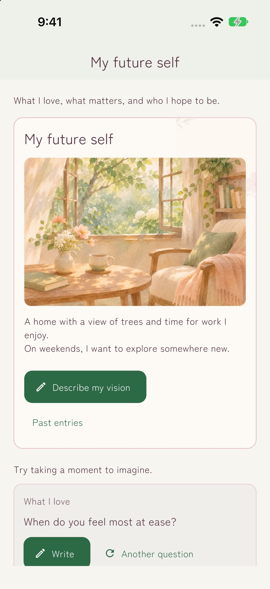

기본 기능
무료
하고 싶은 일 작성과 달성 표시, 사진과 메모, 미래의 나, 돌아보기, 백업과 복원, 기본 꾸미기를 사용할 수 있어요. 커뮤니티 공개와 반응도 이용할 수 있어요.
 My Dreams 100
My Dreams 100
나만의 하고 싶은 일 목록
언젠가 가고 싶은 곳도, 일상의 작은 즐거움도.
마음에 드는 카드에 담아, 설레는 계획을 만들어 보세요.


처음부터 100개가 아니어도 괜찮아요.
조용한 카페, 읽고 싶었던 책, 만나고 싶은 사람. 떠오르는 대로 적고 마음에 드는 카드로 꾸며 보세요. 목록을 열 때마다 다음에 해 보고 싶은 일을 떠올릴 수 있어요.
질문과 준비된 예시에서 하고 싶은 일의 힌트를 찾아보세요.
좋아하는 카드 무늬와 배경, 색상을 골라 보세요.
작은 시도와 그때 느낀 마음을 남겨 보세요.
01 / 발견하기
한 번에 100개를 떠올릴 필요는 없어요. 질문에 답하거나 준비된 아이디어를 살펴보고, 내 말로 하고 싶은 일을 적어 보세요.
“시간과 돈에 제한이 없다면 무엇을 하고 싶나요?”
좋아하는 것과 소중한 가치, 앞으로의 생각을 ‘미래의 나’에 남길 수 있어요.

02 / 내 취향으로 꾸미기
어떤 날은 깔끔한 목록으로, 어떤 날은 스티커 다이어리처럼. 카드와 배경, 테마 색상을 조합해 나만의 분위기를 만들 수 있어요.


위 세 가지 디자인은 개별 구매하거나 Premium 구독 중에 이용할 수 있어요. 무료 기본 디자인도 준비되어 있어요.
03 / 앞으로의 나
몇 년 뒤에는 어떤 하루를 보내고 싶나요? 아직 답이 정해지지 않아도 지금의 생각을 남길 수 있어요. 사진이나 앱의 일러스트를 더해 나중에 다시 살펴보세요.
‘미래의 나’에 적은 답변은 기기에 저장되며 자동으로 공개되지 않아요.

04 / 돌아보기
이룬 일에 사진과 메모를 더해 보세요. 월별 앨범에서 해낸 일과 남긴 기록을 함께 돌아볼 수 있어요. 그 과정의 작은 한 걸음도 소중한 기록이 됩니다.

조금 다른 힌트가 필요할 때
이달의 주제와 다른 사람의 하고 싶은 일에서 새로운 힌트를 찾아보세요. 공개하고 싶은 달성 기록만 공유하고, 축하를 보내거나 마음에 드는 일을 내 목록에 추가할 수 있어요.
공유는 선택이에요. 목록과 돌아보기 기능을 혼자서만 사용해도 괜찮아요.

나에게 맞는 방식으로
기본 기능
하고 싶은 일 작성과 달성 표시, 사진과 메모, 미래의 나, 돌아보기, 백업과 복원, 기본 꾸미기를 사용할 수 있어요. 커뮤니티 공개와 반응도 이용할 수 있어요.
한 번 구매하는 팩
카드와 어울리는 배경이 담긴 디자인 팩, 추가 글꼴 팩을 선택할 수 있어요. 구매한 팩은 Premium 구독이 끝나도 계속 이용할 수 있어요.
Premium
광고 없이, 포함된 디자인·배경·추가 글꼴을 이용하고 라벨을 한꺼번에 정리하거나 나만의 목록을 추가·관리할 수 있어요.
가격과 포함 항목은 앱 내 스토어에서 확인해 주세요. 디자인·글꼴 팩 개별 구매에는 광고 제거가 포함되지 않아요. 추가 글꼴은 일본어 중심이며, 지원하지 않는 문자는 기본 글꼴로 표시돼요.
하나부터 시작해도 괜찮아요. 질문과 예시를 참고하고, 생각날 때마다 조금씩 늘려 갈 수 있어요.
개인 목록은 자동으로 공개되지 않아요. 커뮤니티에 공유할 카드는 직접 선택합니다.
백업 기능으로 기록을 내보내고 복원할 수 있어요. 기기 간 자동 동기화 기능은 아니에요. 구매 복원은 구매했던 스토어에서 진행해 주세요.
마음에 드는 카드를 골라 나만의 목록을 만들어 보세요.